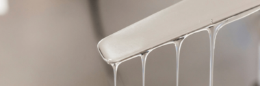

A INOQUÍMICA foi criada inicialmente para atender o mercado nordestino, acreditando numa das regiões em desenvolvimento e crescimento. Atuando no mercado a mais de 20 anos, com grande experiência na sua equipe técnica e gestão. Implantando política de responsabilidade e pesquisa.
Possuidora da ISO-9001, área própria, tancagem, unidade produtiva composta por reatores, vasos formuladores e unidades de envazes.
Dentro do seu portfólio, compreende uma unidade para terceirização, atendendo a grandes empresas que entendem ser oportuno participar mais próximo do mercado nordestino.
A INOQUÍMICA possui frota própria e mantém pesquisas constantes para atender da melhor forma possível os seus clientes.
Em função de sua localização privilegiada junto ao Pólo Petroquímico de Camaçari, ao Porto de Aratu e aos principais centros industriais da Região Nordeste, a Inoquímica se destaca por seu compromisso no fornecimento e sua agilidade no atendimento .
É hoje o maior fornecedor de plastificantes para o segmento calçadista da Região Nordeste. Recentemente iniciou sua atuação na venda no mercado externo.
Conta com diversas Unidades de Negócios, voltadas à produção de resinas de base poliéster-glicol, utilizadas para a Modificação de Polímeros e como Auxiliar de Processo nos segmentos de elastômeros e plásticos. Atua na industrialização de adesivos de base policloropreno e poliuretano, de tintas de base acrílica e PVA, na produção de aditivos para a indústria petrolífera.
Diretamente envolvida com a sustentabilidade, a Inoquímica atua fortemente no segmento de reciclagem de polímeros PET e PP, permitindo a economia substancial de matérias-primas derivadas de petróleo e conservação de energia.
A cada dia a Inoquímica reafirma seu compromisso para a constante geração de inovação e geração de tecnologia na Indústria Química Brasileira.